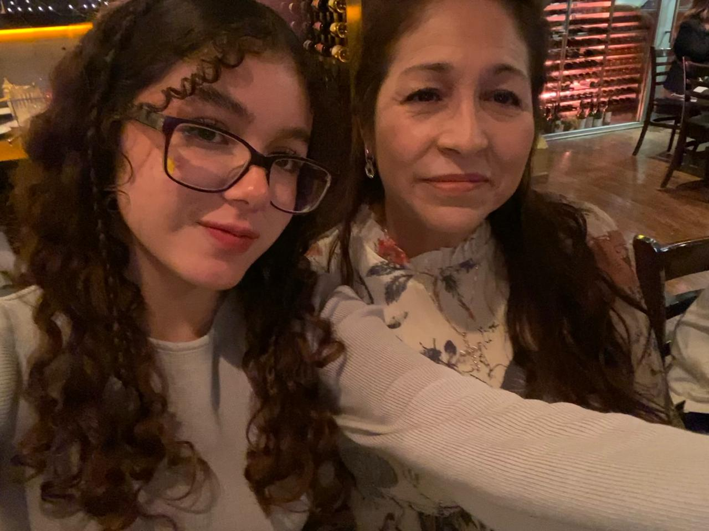
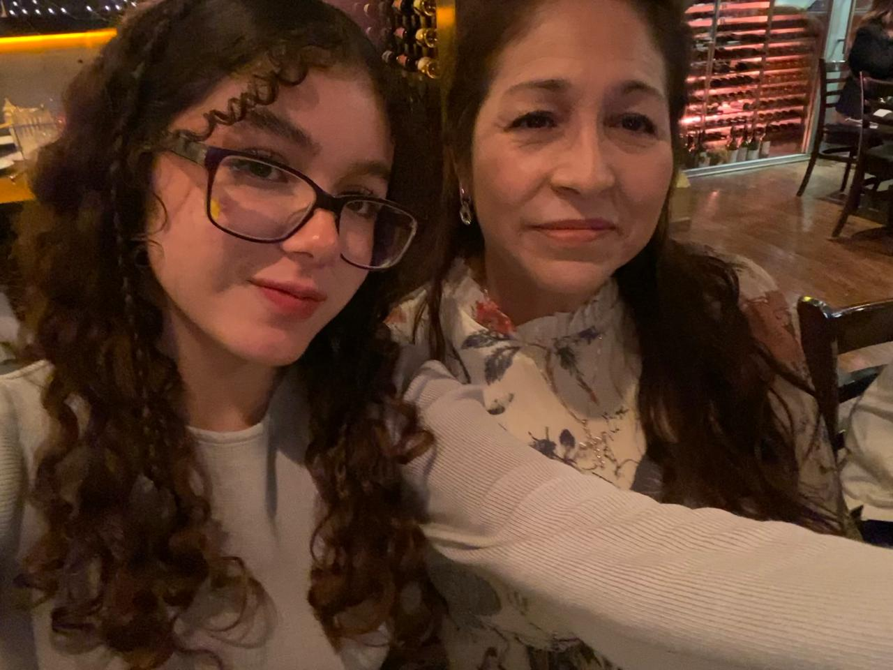

CARACTERISTICAS
POSTRES FAVORITOS
COMIDAS FAVORITAS
Mi cabello chino
Nieve de Chcolate
Ceviche
Soy muy emocional
Flan
Enchiladas verdes
Soy caprichosa
chocolates
Hamburguesas
- Rosalba Murillo-Mamá
- Armando Galicia-Hermano
- Mili Reyes-Cuñada
- Dylan Galicia-Sobrino
- Fausto Cuevas-Hermano
- Johana Montaño-Cuñada
- Omar Cuevas-Hermano
- Karina Cuevas-Hermana
Miembros de mi familia
AMIGOS Y FAMILIA
 

Artistas Favoritos |
Canciones Favoritas |
Hobbies |
One Direction |
All too well (taylors version) |
Mirar peliculas y series |
Taylor Swift |
A.M |
Salir a cafés |
Tiago pzk |
You belong with me |
Escuchar musica |
Amistades más cercanas
|
ALUMNA:Cuevas Murillo Rosalba Isabel
GRUPO:4BPM
MATERIA:Desarrollo de Aplicaciones Web
PROFESOR:Jose Cruz Ochoa Lopez

ATRASMENÚSIGUIENTE |